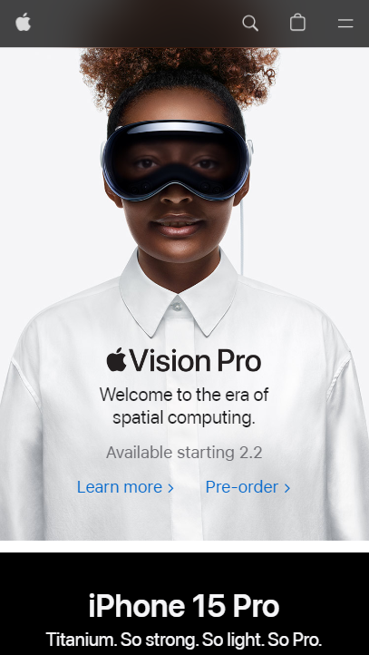
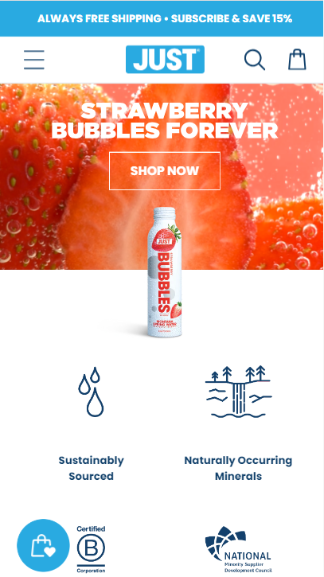

White Space and Clean Design
Apple
apple.com The website features an elegant and clean design, where simplicity and clarity take center stage. Upon entering the site, visitors are greeted by a generous use of white space, creating a spacious and uncluttered feel. The absence of unnecessary elements allows the essential content to breathe, making it easily digestible for users.
PARC: Contrast
DFYNE
dfyne.comThe moment you land on this website, the power of its contrast design becomes immediately apparent. The color scheme is bold and dynamic, featuring a perfect balance between light and dark tones. Vibrant, eye-catching hues are strategically juxtaposed against deep, rich backgrounds, creating a compelling visual impact.
Visual Hierarchy
Just Water
justwater.com This design effectively showcases visual hierarchy by skillfully arranging its components in an ascending manner. The brand logo, boldly displayed in blue letters at the header, grabs the viewer's attention right from the start. Following this, a succinct description of the service is presented in an appropriately styled font, seamlessly leading to the prominent shop button. Subsequently, in a smaller typography, various qualities about the product are highlighted in different colors, organized in an aesthetically pleasing grid distribution. This thoughtful arrangement serves to guide the web user seamlessly toward the most crucial action on their website — the purchase of water.